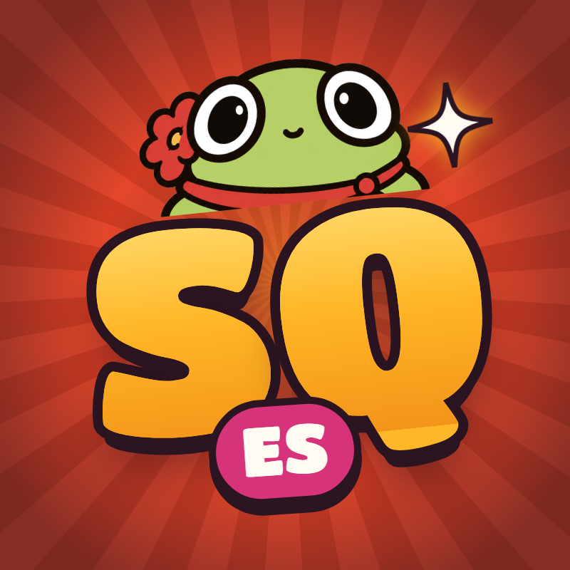

Last updated: 26 October 2026
The Side Quest Spanish publishing tool is used only by Side Quest Spanish to post its own original educational videos to its own social media accounts. It is not offered to other users.
All videos are original content created by Side Quest Spanish and comply with the TikTok and Instagram community guidelines and terms of service.
The content is provided for educational purposes, as is, without warranties. We may update these terms at any time by publishing a new version on this page.
Contact: see our privacy policy.